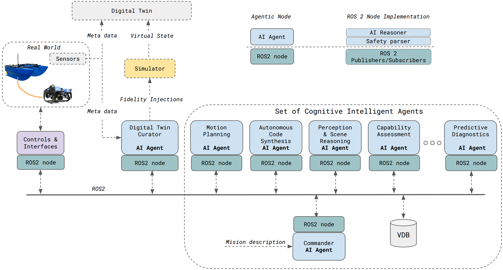

Distributed AI Agents for Cognitive Underwater Robot Autonomy
UROSA (Underwater Robot Self-Organizing Autonomy) is a software architecture I developed that reimagines how robots reason in complex, unpredictable environments. Instead of relying on rigid, pre-programmed rules, UROSA uses a collaborative team of specialized AI agents - each focused on perception, planning, diagnostics, or execution - that communicate, reason, and decide together inside a ROS 2 framework. The result is an underwater vehicle that can handle intricate missions with far less human micromanagement, adapting online when sensors fail, conditions change, or the mission goal shifts.
System Architecture & Concepts
The UROSA architecture is best understood as a distributed cognitive ecosystem. The diagram below shows how the physical robot, a predictive physics-based digital twin, and a core set of AI agents interact continuously: real sensor data updates the twin, the agents reason over the twin and the mission state, and the resulting decisions are executed back on the robot. This loop is what lets UROSA plan, diagnose, and learn rather than simply follow a script.

Architectural Overview Video
This video provides a narrated walkthrough of the UROSA architecture. It explains the roles of the key AI agents, how real-world sensor data continuously updates a physics-based simulator to create a high-fidelity digital twin, and how the distributed cognitive ecosystem reasons together to achieve complex underwater missions.
Demonstrations & Key Results
UROSA's power comes from a set of innovations that move it beyond scripted autonomy. Rather than following fixed instructions, the robot can reason and adapt to novel problems as they arise. It learns from experience, using a structured memory of past missions to improve resilience over time. To handle completely unforeseen challenges, it can generate new skills by autonomously writing, testing, and deploying new software on the fly. At the same time, it can predict its own hardware failures before they become critical through built-in diagnostics, while keeping every action verifiable and safe inside a multi-layered framework.

Validation of Core Innovations
This video showcases the results from several validation experiments that demonstrate UROSA's core innovations in practice. It includes complex multi-agent coordination, where two AUVs autonomously negotiate a collision-free path; online policy refinement, where a "Teacher" agent instructs a "Student" agent to ignore distractions and focus reporting on specific targets; and an on-the-fly "self-repair" demonstration, where the system autonomously writes and deploys new software to recover from a simulated critical sensor failure.
Citation
If you use UROSA in your research, please cite our paper:
@misc{buchholz2025urosa,
title = {Distributed AI Agents for Cognitive Underwater Robot Autonomy},
author = {Markus Buchholz and Ignacio Carlucho and Michele Grimaldi and Yvan R. Petillot},
year = {2025},
eprint = {2507.23735},
archivePrefix = {arXiv},
primaryClass = {cs.RO},
note = {Under review at the IEEE Journal of Oceanic Engineering.},
code = {https://github.com/markusbuchholz/urosa_underwater_autonomy},
url = {https://arxiv.org/abs/2507.23735}
}